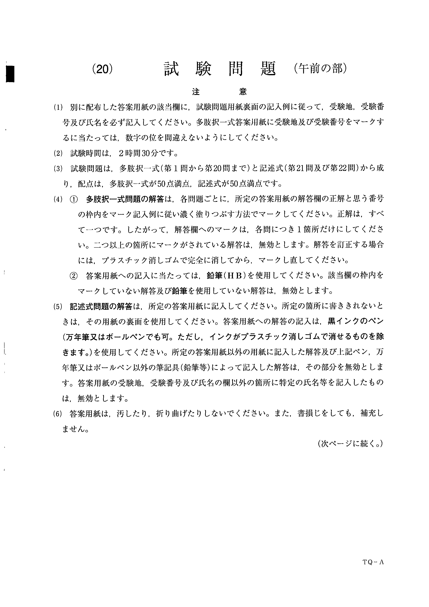
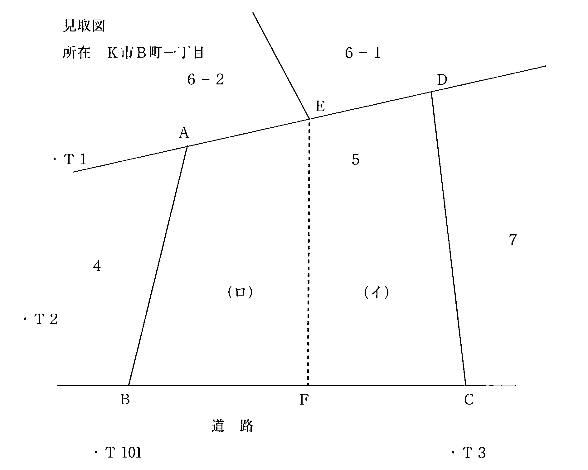
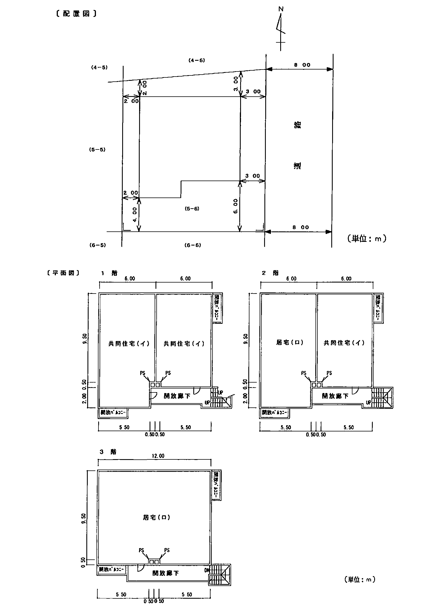
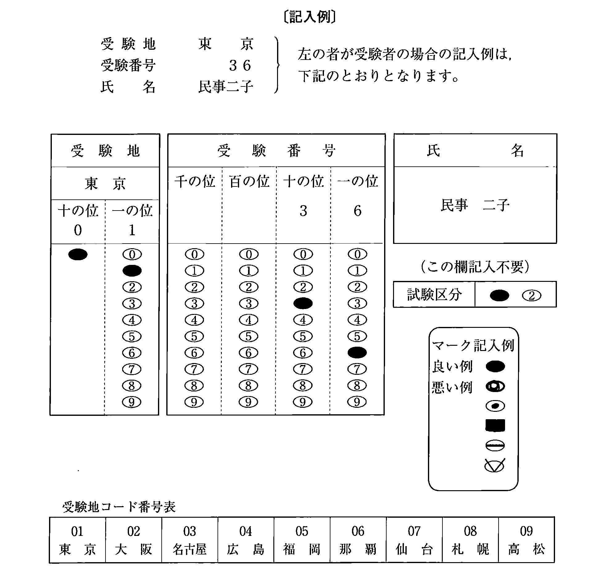

注意（問題冊子の表紙）

多肢択一式（第1問〜第20問）
第1問
不動産質に関する次のアからオまでの記述のうち，誤っているものの組合せは，後記1から5までのうちどれか。
- ア質権者は，被担保債権の全部の弁済を受けるまでは，質権の目的である不動産の全部についてその権利を行使することができる。
- イ質権者は，質権設定者の承諾を得なければ，質権の目的である不動産について転質をすることができない。
- ウ質権者は，質権設定者の承諾を得なければ，質権の目的である不動産の使用及び収益をすることができない。
- エ同一の不動産について数個の質権が設定されたときは，その質権の順位は，登記の前後による。
- オ質権は，金銭以外の物の引渡請求権を被担保債権として，設定することができる。
1 アエ2 アオ3 イウ4 イオ5 ウエ
第2問
不動産物権変動に関する次のアからオまでの記述のうち，判例の趣旨に照らし正しいものの組合せは，後記1から5までのうちどれか。
- アA所有の甲土地をBが時効取得した後，その旨の登記がされる前に，Aは甲土地をCに売却してその旨の登記がされた。この場合に，Bは，Cに対して，甲土地の所有権取得を対抗することができない。
- イA所有の甲土地がAからBに贈与されたが，その旨の登記がされる前にAは死亡した。その後，Aの唯一の相続人であるCは，甲土地をDに売却して，その旨の登記がされた。この場合に，Bは，Dに対して，甲土地の所有権取得を対抗することができる。
- ウA所有の甲土地がAからBに売却されたが，その旨の登記はされていない。この場合に，Bは，権原なく甲土地を占有しているCに対して，甲土地の所有権取得を対抗することができない。
- エAとBは甲土地を共有していたところ，Aはその共有持分をCに譲渡したが，その旨の登記はされていない。この場合に，Cは，Bに対して，甲土地の共有持分の取得を対抗することができる。
- オA所有の甲土地がAからBに売却されたが，その旨の登記がされる前に，甲土地はAからC，CからDへと順次売却され，その旨の登記がされた。Bに対する関係で，Cは背信的悪意者であるがDは背信的悪意者ではない。この場合に，Bは，Dに対して，甲土地の所有権取得を対抗することができない。
1 アエ2 アオ3 イウ4 イエ5 ウオ
第3問
次のアからオまでの記述は，無効な法律行為と取り消すことができる法律行為に関するものである。これらの記述のうち，「この法律行為」が取り消すことができる法律行為のみを指しているものの組合せは，後記1から5までのうちどれか。
- アこの法律行為は，行為の後一定の期間が経過することにより，確定的に有効となる場合がある。
- イこの法律行為は，だれでもその効力がない旨を主張することができる。
- ウこの法律行為は，その効力がない旨の主張をした時から将来に向かってのみ，効力を失う。
- エこの法律行為により金銭債務を負担した債務者がその金銭の支払をした後であっても，債務者は，支払った金銭の返還を請求することができる。
- オ成年被後見人がした法律行為は，原則としてこの法律行為である。
1 アウ2 アオ3 イウ4 イエ5 エオ
第4問
建物の滅失の登記の申請に関する次のアからオまでの記述のうち，正しいものの組合せは，後記1から5までのうちどれか。
- ア建物を相続により取得した者が複数いる場合において，被相続人名義のままその建物を取り壊したときは，その取得者の一人は，その建物を取得した他の共同相続人の同意を証する情報を提供しなければ，当該建物の滅失の登記を申請することができない。
- イ各階が一個の区分建物である3階建ての一棟の建物の3階部分にある区分建物が取り壊されたことにより一棟の建物が2階建てとなったとしても，取り壊された区分建物以外の区分建物の表題部所有者又は所有権の登記名義人は，取り壊された区分建物以外の区分建物について，構造の変更による表題部の変更の登記を申請することを要しない。
- ウA所有の土地の上に借地人B名義の既登記の建物がある場合，Bの承諾を得てAが建物を取り壊したときは，Aは，Bの承諾を証する情報を提供して，当該建物の滅失の登記を申請することができる。
- エ共用部分である旨の登記がされている建物を取り壊した場合は，当該建物の所有権を証する情報を提供して，その所有者の一人から建物の滅失の登記を申請することができる。
- オ処分禁止の仮処分の登記がある建物を取り壊した場合，当該仮処分がされた建物の所有権の登記名義人は，建物の滅失の登記を申請するときは，処分禁止の仮処分の申立人の承諾を証する情報を提供しなければならない。
1 アウ2 アオ3 イエ4 イオ5 ウエ
第5問
次の対話は，建物に関する教授と学生との対話である。教授の質問に対する次のアからオまでの学生の解答のうち，正しいものの組合せは，後記1から5までのうちどれか。
- ア教授： 既登記の建物が老朽化したので，外壁の化粧材をすべて張り替えて，屋根も和瓦から洋瓦にふき替える大規模改修工事を行った場合は，用途変更がなかったとしても建物に関する登記は何か必要ですか。
学生： 外壁材をすべて張り替えて屋根材まで変更する大規模改修工事を行ったのですから，建物の表題部の変更の登記が必要になります。 - イ教授： ところで，建物の所有権の登記名義人Aの息子Bが全額を負担して増築工事を行い，AがBにその出費に見合った当該建物の持分の譲渡をした場合において，工事完了後の増築部分が区分建物の要件を満たしていないときは，どのような登記を行いますか。
学生： 区分建物ではないので，共有者であるAと息子Bの二人からの申請により，床面積が増加したことによる建物の表題部の変更の登記を行います。 - ウ教授： では，上記の質問で，もし，A所有の建物が未登記だった場合は，どのような登記ができますか。
学生： 建物が未登記の場合は，建物の表題部の変更の登記をすることができませんので，AとBとを共有者とする建物の表題登記を行うことになります。 - エ教授： それでは，登記されている建物に附属建物があり，この附属建物だけ取り壊したときは，どのような登記を行いますか。
学生： 附属建物の取壊しの場合は，附属建物の滅失の登記を行うのではなく，建物の表題部の変更の登記を行います。 - オ教授： では，附属建物として登記されている建物部分を取り壊し，その附属建物と種類・構造・床面積がすべて同じ附属建物を，全く同じ位置に新しく建て直した場合はどうなりますか。
学生： 不動産の表示に関する登記は，不動産の現況を公示するものですから，種類・構造・床面積がすべて同一で位置も全く同一ならば，現況と登記が一致していることになります。したがって，当該附属建物の建物図面及び各階平面図の変更が必要なく，建物が一致しているので，建物の表題部の変更の登記は必要ありません。
1 アイ2 アオ3 イウ4 ウエ5 エオ
第6問
甲土地から乙土地を分筆する場合に，申請情報として提供する乙土地の地積に関する次のアからオまでの記述のうち，正しいものの組合せは，後記1から5までのうちどれか。ただし，乙土地について地目の変更の登記をすべき場合には，地目の変更の登記も併せて一の申請情報によって申請するものとする。
- ア邸宅の敷地及びこれに接続したテニスコートに利用されている甲土地から，テニスコートの部分を分筆して乙土地とする場合において，この部分の実測面積が620.5782平方メートルであるときは，地積は，620平方メートルである。
- イ居宅の敷地となっている甲土地から，公衆用道路として利用される状態となった部分を分筆して乙土地とする場合において，この部分の実測面積が9.0025平方メートルであるときは，地積は，9.00平方メートルである。
- ウ畑として利用されている甲土地から，地役権を設定するため，高圧線下となった土地を分筆して乙土地とする場合において，この部分の実測面積が34.9471平方メートルであるときは，地積は，34.94平方メートルである。
- エ保安林として登記されている甲土地から，温泉の湧出口となっている部分を分筆して乙土地とする場合において，この部分についても保安林の指定解除がなく，かつ，実測面積が56.8703平方メートルであるときは，地積は56.87平方メートルである。
- オ畑として登記されている甲土地から，宅地造成工事中となっている部分を分筆して乙土地とする場合において，この部分の実測面積が215.4766平方メートルであるときは，地積は，215平方メートルである。
1 アウ2 アエ3 イエ4 イオ5 ウオ
第7問
次の対話は，筆界に関する教授と学生との対話である。教授の質問に対する次のアからオまでの学生の解答のうち，誤っているものの組合せは，後記1から5までのうちどれか。
- ア教授： 土地の境界には，大きく分類すると，公法上の境界と私法上の境界とがありますが，これについて説明してください。
学生： 公法上の境界は，法的手続を経て公示されている土地の区画線で，不動産登記法では筆界という語で定義されています。これは，私人が自由に動かしたり，新たに設定したりすることができないものです。これに対し，私法上の境界は，所有権界や占有界等，私人間で自由に取決めのできるものです。 - イ教授： では，筆界の成り立ちについて説明してください。
学生： 筆界は，明治時代に行われた地租改正事業により創設されたといわれています。徴税目的のために，所有者とその土地の位置及び形状等を調査し，台帳に登録しました。その際，一筆の土地として把握され，図面に公示された区画を成す現地の線が原始的な筆界と考えられています。 - ウ教授： 筆界は，その後も新たに創設されていますが，それはどのような場合ですか。
学生： 分筆の登記がされた場合，地積に関する更正の登記がされた場合，土地区画整理法等の規定に基づく換地処分がされ，その登記がされた場合などがあります。 - エ教授： では，いわゆる筆界確定訴訟の確定判決によって示される筆界はどのような性格のものですか。
学生： 裁判官が，過去に形成された筆界を探し出したもの，又は探求してもなお不明の場合に裁判官により再形成されるものです。この判決によって示される筆界は公的な存在ですので，この判決は登記官等の第三者にも効力が及びます。 - オ教授： 無地番の山林と無地番の道路の境界線が，地図に準ずる図面に表されている場合に，その境界を現地において確認することができるとき，これは筆界特定申請の対象となる筆界と認められますか。
学生： 未登記の土地同士の境界であっても，先に述べました地租改正事業の際に作成された改租図やその後の更正図に示されていたものは筆界と認められるので，筆界特定の申請もすることができます。
1 アエ2 アオ3 イウ4 イエ5 ウオ
第8問
甲土地の一部を分筆して，それを乙土地に合筆しようとする場合に，これらの登記の申請を一の申請情報によってする登記（以下「本件分合筆の登記」という。）の申請に関する次のアからオまでの記述のうち，正しいものの組合せは，後記1から5までのうちどれか。ただし，各記述中の条件の他に合筆の登記を妨げる要件はないものとする。
- ア甲土地に要役地についてする地役権の登記がある場合には，乙土地に合筆しようとする部分について地役権を消滅させることを証する地役権者の作成した情報を提供して，本件分合筆の登記を申請することができる。
- イ甲土地に敷地権である旨の登記がある場合には，乙土地に合筆しようとする部分について分離して処分することができることとする規約を設定したことを証する情報を提供して，敷地権の変更の登記と本件分合筆の登記を一の申請情報によって申請することができる。
- ウ甲土地の登記記録上の地目が雑種地であり，乙土地の登記記録上の地目及び現況が宅地である場合において，甲土地の現況が宅地である部分について分筆し，これを乙土地に合筆しようとするときは，当該一部の地目に関する変更の登記と本件分合筆の登記を一の申請情報によって申請することができる。
- エ甲土地及び乙土地に同一の区分建物についての敷地権である旨の登記がある場合において，その敷地利用権が所有権であるときは，本件分合筆の登記を申請することができる。
- オ甲土地に存続期間の定めのある地上権の設定の登記がある場合において，その期間が経過しているときは，地上権の登記を抹消することなく，本件分合筆の登記を申請することができる。
1 アイ2 アウ3 イエ4 ウオ5 エオ
第9問
登記の申請に関する次のアからオまでの記述のうち，誤っているものの組合せは，後記1から5までのうちどれか。
- ア地方自治法第260条の2に規定する認可を受けた地縁による団体である町内会は，地域の共同活動のために町内会館を建築したときは，当該建物について，当該町内会を表題部所有者とする表題登記を申請することができる。
- イ区分建物でない建物の表題部所有者は，当該建物がこれに接続して区分建物が新築されたことにより区分建物となったときは，新築された区分建物の所有者に代位して，区分建物の表題登記を申請することができる。
- ウ株主総会において解散決議がされた株式会社の代表清算人は，当該会社が所有権の登記名義人である土地の地積に関する更正の登記を申請することができる。
- エ一棟の建物に属する複数の区分建物のうちの一個の区分建物の所有者の一人は，その一棟の建物の敷地であって所有権が敷地権である旨の登記のある土地について，分筆に係る管理組合の総会の決議を証する情報を提供して分筆の登記を申請することができる。
- オ表題部所有者A及びBの持分に変更があった場合，A及びBは，表題部所有者の持分の変更の登記を申請することができる。
1 アウ2 アオ3 イウ4 イエ5 エオ
第10問
電子申請に関する次のアからオまでの記述のうち，誤っているものの組合せは，後記1から5までのうちどれか。
- ア電子申請により土地家屋調査士が代理人として表示に関する登記を申請するときは，その土地家屋調査士が申請情報に電子署名をしなければならない。
- イ電子申請により表題登記を申請する場合において，申請人が電子署名に係る地方公共団体の認証業務に関する法律第3条第1項の規定に基づき作成された電子証明書を提供したときは，住所を証する情報の提供を要しない。
- ウ所有権の登記名義人について登記識別情報が書面で通知されている場合において，電子申請による合筆の登記を申請するときは，通知を受けた所有権の登記名義人が，通知書をスキャナにより電磁的記録に記録し，これに当該所有権の登記名義人が電子署名をし，添付情報として提供することができる。
- エ電子申請により表題登記を申請する場合において，所有権を証する情報が書面に記載されているときは，当該書面をスキャナにより電磁的記録に記録して，申請代理人がこれに電子署名をし，添付情報として提供することができる。
- オ電子申請により地積に関する更正の登記をする場合において，地積測量図が書面で作成されているときは，当該図面をスキャナにより電磁的記録に記録して，当該図面の作成者がこれに電子署名をし，添付情報として提供しなければならない。
1 アイ2 アウ3 イエ4 ウオ5 エオ
第11問
書面申請において提出する土地所在図，地積測量図又は地役権図面の作成に関する次のアからオまでの記述のうち，正しいものは幾つあるか。
- ア不動産登記法第14条の地図が乙1の精度区分により作成され，登記所に備え付けられている地域について分筆の登記を申請する場合であっても，申請地が市街地であるときは，地積測量図は甲2の精度区分により作成しなければならない。
- イ地役権図面は，地役権の存する範囲及びその地積を明確にして作成しなければならない。
- ウ地役権図面には，作成の年月日を記録し，申請人が記名するとともに，地役権者が署名し，又は記名押印しなければならない。
- エ土地の分筆登記を申請する場合において，地積測量図及び地役権図面を提供する場合には，地役権図面を作成するための誤差の限度は，地積測量図を作成する誤差の限度と同一の誤差の限度によるものとする。
- オ地積測量図を作成する際には，基本三角点等に基づく測量の成果による筆界点の座標値を記録しなければならないが，近傍に基本三角点等が存しない場合その他の基本三角点等に基づく測量ができない特別の事情がある場合には，近傍の地物に基づく測量の成果による筆界点の座標値を記録しなければならない。
1 1個2 2個3 3個4 4個5 5個
第12問
筆界特定制度に関する次のアからオまでの記述のうち，誤っているものの組合せは，後記1から5までのうちどれか。
- ア筆界特定の申請情報に補正することができる不備があり，登記官が補正を認める相当な期間を定めたときは，その期間内に，当該補正すべき事項に係る不備を補正することができる。
- イ筆界特定の申請情報の内容である工作物，囲障又は境界標の有無その他の対象土地の状況については，図面によりその内容を明らかにして申請しなければならない。
- ウ筆界特定の申請情報の内容である対象土地について筆界特定を必要とする理由は，例えば，工作物等の設置の際，隣接地所有者と筆界の位置につき意見の対立が生じた等の具体的な事情を明らかにしなければならない。
- エ筆界特定の申請が却下された場合，その申請人は，筆界特定登記官の当該却下処分に対し，審査請求をすることができない。
- オ筆界特定の申請に係る筆界についていわゆる筆界確定訴訟が係属している場合には，当該事件を特定するに足りる事項を筆界特定の申請情報の内容として申請しなければならない。
1 アウ2 アオ3 イウ4 イエ5 エオ
第13問
分筆の登記の申請情報又は添付情報に関する次のアからオまでの記述のうち，正しいものの組合せは，後記1から5までのうちどれか。
- ア地積に関する更正の登記と分筆の登記を一の申請情報により申請する場合には，提供すべき地積測量図は，分筆後の各筆を求積したものであれば足りる。
- イ一筆の土地の一部が別の地目になったことにより，地目に関する変更の登記と分筆の登記とを一の申請情報により申請する場合において，当該土地の所有権の登記名義人が死亡したために相続人から当該申請をするときは，相続人全員の住所及び氏名を申請情報の内容としなければならない。
- ウ一筆の土地の一部について売買したことにより所有権の移転の登記をする前提として分筆の登記を申請する場合，当該土地が敷地権付き区分建物の法定敷地であるときは，その分筆の登記の申請情報には，分離処分を可能とする定めを設定した規約を証する情報を併せて提供しなければならない。
- エ一筆の土地の一部が別の地目になったことにより，地目に関する変更の登記と分筆の登記とを一の申請情報により申請するときは，登記原因及びその日付を申請情報の内容としなければならない。
- オ甲土地の一部について地役権の設定の登記がされている場合において，甲土地の地役権が存する部分を乙土地として分筆する分筆の登記を申請するときは，地役権図面を併せて提供しなければならない。
1 アエ2 アオ3 イウ4 イオ5 ウエ
第14問
区分建物の表示に関する登記に関する次のアからオまでの記述のうち，正しいものの組合せは，後記1から5までのうちどれか。
- ア区分建物が一棟の建物の地下一階部分と地上一階部分に属する場合の当該区分建物の階層の表示は地下一階付き平家建である。
- イ区分建物の壁と柱で構成される内側線が，本来の壁面より柱部分が内側に突き出て，柱状に凸凹がある場合，床面積は，柱部分を含めた凸凹状の内側線でなく，柱部分の凸凹はないものとした壁面のみで囲まれた部分の内側線の水平投影面積により求積する。
- ウ区分建物の表題登記は，一棟の建物に属するすべての区分建物について一の申請情報により申請しなければならない。
- エ区分建物の原始取得者から取得した転得者は，原始取得者が区分建物の表題登記の申請をしない場合には，原始取得者に代位して区分建物の表題登記を申請することができる。
- オBが所有する土地に区分建物を新築したAが，当該建物の完成後，Bからその土地を買い受けて，敷地権付き区分建物として表題登記を申請する場合，敷地権の登記原因の日付は，区分建物の新築の日である。
1 アイ2 アウ3 イエ4 ウオ5 エオ
第15問
建物の合体による登記等に関する次のアからオまでの記述のうち，誤っているものの組合せは，後記1から5までのうちどれか。
- アいずれも所有権の登記がある建物を合体したことによる合体による登記等の申請は，登録免許税を納付しなければならない。
- イ合体前の各建物の所有者が，合体後の建物について有する持分の割合を定めることが必要となる場合において，合体前の各建物の所有者の全員が申請人であって，申請情報と併せて印鑑証明書を提供したときは，申請情報とは別に持分の割合を証する情報を提供することを要しない。
- ウ所有権の登記がある建物の合体による登記等の申請には，合体前の所有権の登記名義人の異同にかかわらず，合体前のすべての建物についての所有権の登記名義人の登記識別情報を提供しなければならない。
- エ合体による登記等の申請において，合体前の建物に登記されている抵当権が合体後の建物に存続するものとしての記載のないものがあるときは，当該抵当権の登記名義人が当該抵当権を消滅させることを承諾したことを証する情報又は当該抵当権者に対抗することができる裁判があったことを証する情報を提供しなければならない。
- オ所有権の登記名義人を異にする建物を合体した場合の合体による登記等の申請において，合体前の一部の建物にされた抵当権の登記で合体後の建物に存続することとなるものがあるときは，合体後の所有者の持分について当該抵当権者が当該抵当権の存続登記と同一の登記をすることを承諾したことを証する情報又は当該抵当権者に対抗することができる裁判があったことを証する情報を提供しなければならない。
1 アイ2 アウ3 イオ4 ウエ5 エオ
第16問
登記することができる建物に関する次の1から5までの記述のうち，誤っているものはどれか。
- 1屋根及び外壁があって，内部に車を格納する回転式のパーキング機械が設置されているタワー状の立体式の駐車場は，建物として登記をすることができる。
- 2Aが所有する建物とBが所有する建物について，屋根が密着し，外観では一棟の建物のように見られる場合であっても，柱，壁が別々であるときは，A及びBが所有するそれぞれの部分を区分建物でない建物として登記をすることができる。
- 3桟橋の上に店舗として建設した建物は，たとえ桟橋に定着性があったとしても建物として認めることはできない。
- 4外壁の形態が観音像であり，内部に祭壇が設けられ参拝者が着席することができ，寺院の本堂として利用されている建造物は，建物として登記をすることができる。
- 5高架線構造物の下部（いわゆるガード下）の土地に，定着する基礎，壁等を設けて建造した店舗，倉庫等は，建物として登記をすることができる。
第17問
建物の床面積に関する次のアからオまでの記述のうち，誤っているものの組合せは，後記1から5までのうちどれか。
- ア出窓は，その高さ1.5メートル以上のもので，その下部が床面と同一の高さにあるものに限り，床面積に算入する。
- イ柱又は壁が傾斜している場合の床面積は，各階の床面に接着する壁その他の区画の中心線で囲まれた部分の水平投影面積である。
- ウ建物の一部が上階まで吹抜になっている場合には，その吹抜の部分は，上階の床面積に算入しない。
- エ開閉式の屋根を有する建物における開閉式屋根の開閉可能な部分の下に当たる部分は，床面積に算入しない。
- オ独立性のある二棟の高層建物を往来するために2階部分に工作した建物の通路は，床面積に算入しなければならない。
1 アウ2 アオ3 イウ4 イエ5 エオ
第18問
建物の合併の登記に関する次のアからオまでの記述のうち，誤っているものの組合せは，後記1から5までのうちどれか。
- ア効用上一体として利用される状態にある所有者を同じくする二つの建物に，どちらにも登記の目的，申請の受付の年月日及び受付番号並びに登記原因及びその日付が同一である所有権の移転の仮登記があり，このほかに所有権の登記以外の登記がない場合には，これらの建物の合併の登記を申請することができる。
- イ効用上一体として利用される状態にある所有者を同じくする二つの建物について，どちらにも合併の妨げにならない同一の抵当権の登記がある場合において，その抵当権につき，登記の目的，申請の受付の年月日及び受付番号並びに登記原因及びその日付が同一の移転の仮登記があり，このほかに所有権の登記以外の登記がないときは，これらの建物の合併の登記を申請することができる。
- ウ効用上一体として利用される状態にある所有者を同じくする二つの建物について，どちらにも合併の妨げにならない同一の抵当権の登記がある場合において，その抵当権につき，登記の目的，申請の受付の年月日及び受付番号並びに登記原因及びその日付が同一の抵当権の変更の登記があり，このほかに所有権の登記以外の登記がないときは，これらの建物の合併の登記を申請することができる。
- エ効用上一体として利用される状態にある所有者を同じくする二つの建物に，工場財団に属した旨の登記がされている場合には，これらの建物が同一の財団を組成するときであっても，これらの建物の合併の登記を申請することができない。
- オ敷地権の登記がある建物を主たる建物とし，敷地権の登記がない建物をその附属建物とする合併の登記は，申請することができない。
1 アウ2 アオ3 イエ4 イオ5 ウエ
第19問
区分建物の敷地権に関する次のアからオまでの記述のうち，正しいものの組合せは，後記1から5までのうちどれか。
- ア甲土地及び乙土地を法定敷地として登記している敷地権付き区分建物について，甲土地に建築されている建物部分を取り壊したことにより，甲土地の上に建物が存在しないこととなった場合には，甲土地の敷地権につき，敷地権であった権利が敷地権でない権利となったことによる建物の表題部に関する変更の登記を申請しなければならない。
- イ敷地権の消滅を原因とする建物の表題部に関する変更の登記を申請する場合において，敷地権の目的である土地が他の登記所の管轄区域内にあるときは，当該土地の登記事項証明書を申請情報と併せて提供しなければならない。
- ウ敷地権の登記原因の日付は，建物の所有者が建物の新築，建物の区分等により区分建物が生じた日前から建物の敷地につき登記した所有権，地上権又は賃借権を有していたときは，その区分建物が生じた日である。※
- エ敷地権についてされた登記としての効力を有する抵当権がある敷地権付き区分建物について，分離処分可能規約を設定した場合，当該区分建物について当該抵当権を消滅させる旨の抵当権者の承諾を証する情報を提供したとしても，当該区分建物について当該抵当権を消滅させることとなる建物の表題部に関する変更の登記を申請することはできない。
- オ規約敷地が敷地権の目的である建物について，当該敷地権とされた敷地利用権が敷地権でなくなったことによる建物の表題部に関する変更の登記の申請には，当該規約敷地について分離処分を可能とする定めを設定した規約を証する情報を提供しなければならない。
1 アウ2 アオ3 イウ4 イエ5 エオ
※ ウ この問は，正しい記述がウのみで正解となる組合せが無い（没問）。
第20問
土地家屋調査士又は土地家屋調査士法人に対する懲戒に関する次のアからオまでの記述のうち，正しいものの組合せは，後記1から5までのうちどれか。
- ア土地家屋調査士又は土地家屋調査士法人に対する戒告の処分については，業務の禁止又は業務の停止の処分の場合とは異なり，処分を行う法務局又は地方法務局の長の判断により，その旨の官報公告を行わないことができる。※
- イ懲戒の処分に係る聴聞の期日における審理は，当該聴聞の対象となる土地家屋調査士又は土地家屋調査士法人から請求があったときは，公開により行わなければならない。
- ウ法務局又は地方法務局の長は，土地家屋調査士又は土地家屋調査士法人に対し業務の停止の懲戒処分をしようとする場合に，当該停止の期間が1か月以内であれば，聴聞を行う必要はない。※
- エ複数の事務所を有する土地家屋調査士法人に対する業務の停止の処分については，土地家屋調査士法等の違反が当該法人の従たる事務所に関するものであっても，法務局又は地方法務局の長は，当該法人のすべての事務所について当該処分を行わなければならない。※
- オ何人も，土地家屋調査士又は土地家屋調査士法人に土地家屋調査士法又は同法に基づく命令に違反する事実があると思料するときは，管轄の法務局又は地方法務局の長に対し，当該事実を通知し，適当な措置をとることを求めることができる。※
1 アイ2 アウ3 イオ4 ウエ5 エオ
※ ア 令和元年の土地家屋調査士法改正（令和2年8月1日施行）により，懲戒処分をする者は法務局又は地方法務局の長から法務大臣に改められた。
※ ウ 令和元年の土地家屋調査士法改正（令和2年8月1日施行）により，懲戒処分をする者は法務局又は地方法務局の長から法務大臣に改められた。
※ エ 令和元年の土地家屋調査士法改正（令和2年8月1日施行）により，懲戒処分をする者は法務局又は地方法務局の長から法務大臣に改められた。
※ オ 令和元年の土地家屋調査士法改正（令和2年8月1日施行）により，懲戒処分をする者が法務大臣に改められ，この通知の相手方も法務大臣となった。
第21問（土地）
第21問A市B町一丁目2番3号に事務所を有する土地家屋調査士東田太郎が，下記見取図に示すK市B町一丁目5番の土地（以下「本件土地」という。）につき，B市C町二丁目3番4号に住所を有する南野二郎から，自己が取得した土地の所有権を第三者に対抗するための登記を申請する前提として必要となる土地の表示に関する登記の申請を依頼されたものとして，後記の調査結果に基づき，別紙第21問答案用紙を用いて，後記の問に答えなさい。

（注）見取図中，A点からE点までの各点は，筆界点を示し，数字は地番を，実線は筆界線を示す。T1，T2及びT3はK市基準点であり，T101はK市基準点を基に測量した多角点である。図中のすべての土地はK市B町一丁目に属する。E点は直線AD上にあり，AEとEDを4：5に内分する点である。また，F点は，E点を通り，線BCに直交する線と線BCの交点である。A点及びB点には，金属標が埋設されており，他の筆界点にはコンクリート杭が埋設されている。
〔土地家屋調査士東田太郎による調査結果〕
1本件土地を管轄するK地方法務局で登記記録を調査した結果は下記のとおりである。
| 表題部 | 所在 K市B町一丁目 |
|---|
| 地番 5番 |
|---|
| 地目 宅地 |
|---|
| 地積 512.66 ㎡ |
|---|
| 権利部 | 甲区 順位2番 所有権移転 |
|---|
| 平成2年6月7日受付第234号 |
|---|
| 平成2年5月14日売買 |
|---|
| 所有者 C市A町二丁目5番2号 |
|---|
| 西川四郎 |
|---|
※乙区は設けられていない。
2西川四郎は，平成19年6月1日に死亡している。西川四郎の親族関係は以下のとおりであり，遺産分割協議は行っていない。
西川四郎は昭和30年出生，昭和52年に西川和子（住所 C市A町二丁目5番2号）と婚姻し，二人の間に，昭和53年に西川七郎（住所 C市A町二丁目5番2号）が出生した。
西川四郎の父 西川一郎は昭和2年に出生し，昭和24年，西川美子（住所 D市F町四丁目2番3号）と婚姻し，二人の間に，昭和25年西川二郎（住所 B市D町三丁目1番7号）が出生した。しかしながら，昭和27年に西川一郎と西川美子との間に協議離婚が成立した。その後，西川一郎は，昭和28年に西川弘子と婚姻し，二人の間には，昭和29年に，西川三郎，昭和30年に，西川四郎，昭和31年に，西川五郎がそれぞれ出生した。西川一郎は平成12年に死亡し，西川弘子は平成14年に死亡している。
西川三郎は，昭和52年に西川花子（住所 E市F町一丁目3番5号）と婚姻し，二人の間に昭和54年に西川六郎（住所 A市D町三丁目1番6号）が出生した。西川三郎は，平成8年に死亡している。
西川五郎は，昭和58年に西川陽子（住所 B市A町二丁目2番9号）と婚姻し，二人の間に昭和60年に西川八郎（住所 B市D町四丁目6番1号）が出生した。西川五郎は平成15年に死亡している。
西川六郎は，平成10年に西川悦子（住所 A市D町三丁目1番6号）と婚姻し，二人の間に平成15年に西川九郎（住所 A市D町三丁目1番6号）が出生した。西川六郎は，
西川四郎の相続人として欠格事由に該当する。
西川七郎は，生前から父との折り合いが悪く，平成19年7月1日，相続を放棄している。
（注）西川四郎の親族関係は上記に記載ある者のみである。特に記載のない者は，現在生存している。
3見取図中，A点B点C点D点E点で囲まれた本件土地のうち，A点B点F点E点で囲まれた部分（見取図中，（ロ）の部分）について，南野二郎は本件土地の所有権登記名義人より平成19年5月1日に金2,000万円で買い受けた。今回，F点には金属鋲を設置した。
4測量の結果
実測により得られたデータは，次のとおりである。
ア基本三角点等（既知点）
K市基準点
| 点名 T1 | 標識の種類 金属標 |
|---|
| X座標 32.74 Y座標 3.31 |
|---|
| 点名 T2 | 標識の種類 金属標 |
|---|
| X座標 13.73 Y座標 1.85 |
|---|
| 点名 T3 | 標識の種類 金属標 |
|---|
| X座標 3.54 Y座標 30.35 |
|---|
＊各点の設置状況は良好である。
イ多角測量観測結果（抜粋）
| 器械点 | 測点 | 水平角 | 平面距離 |
|---|
| T2 | T1 | 0° 00′ 00″ | − |
| T2 | T101 | 150° 21′ 32″ | 10.71 |
| T101 | T2 | 0° 00′ 00″ | − |
| T101 | T3 | 116° 25′ 26″ | 23.91 |
| T101 | B | 24° 44′ 42″ | 6.22 |
ウ測量成果
| 点名 | X座標 | Y座標 |
|---|
| A | 31.63 | 9.85 |
| C | 7.03 | 28.98 |
| D | 32.26 | 31.00 |
(注)1測量は，基準点に基づくものである。
2水平角は，後視方向を0度として右回りの角度を示す。
3座標値及び距離の単位は，メートルである。
問1多角測量の成果により，閉合誤差の調整を行い，T101の座標値を求めなさい。ただし，誤差の調整はコンパスの法則により，行うものとする（閉合差の制限は考慮しないものとする。）。
問2調査及び測量の成果により，B点，E点及びF点の座標値を求めなさい。
問3本件について申請すべき登記の申請書の空欄を埋め完成させなさい。
問4本件について申請すべき登記の申請書に添付する図面を作成しなさい。
(注)1各点の座標値は，計算結果の小数点以下第3位を四捨五入し，小数点以下第2位まで表示すること。
2訂正，加入又は削除をしたときは，押印や字数を記載することを要しない。
3地積測量図には，座標値から求めた筆界点間の辺長を，計算結果の小数点以下第3位を四捨五入して，すべて記載すること。各筆界点，基準点等の座標値の表示，求積及びその方法並びに地積の表示の記載は，省略して差し支えない。なお，基準点，多角点の位置は測量図中に示すこと。
4本件土地の存する地番区域の地図の縮尺は500分の1であり，作成すべき地積測量図の縮尺は250分の1とする。
5三角関数真数表
| 角度 | sin | cos | tan |
|---|
| 0° 33′ 10″ | 0.00965 | 0.99995 | 0.00965 |
| 1° 10′ 28″ | 0.02050 | 0.99979 | 0.02050 |
| 4° 23′ 30″ | 0.07657 | 0.99706 | 0.07680 |
| 25° 14′ 58″ | 0.42656 | 0.90446 | 0.47162 |
| 25° 17′ 52″ | 0.42732 | 0.90410 | 0.47265 |
6不動産登記規則第10条第4項に定める地積測定の公差は，以下のとおりである（ただし，本件土地は市街地地域に属する。）。
（単位：㎡）
| 精度区分 | 甲1 | 甲2 | 甲3 | 乙1 | 乙2 | 乙3 |
|---|
| 512.66 | 0.89 | 2.21 | 4.42 | 6.57 | 13.20 | 26.40 |
7K地方法務局は，不動産登記法附則第6条第1項の指定がされている登記所（いわゆるオンライン庁）であり，必要な登記の申請は，書面を提出する方法によってするものとする。
第22問（建物）
第22問A市C町六丁目2番3号に住所を有する平野大輔は，後記の調査・測量結果のとおり登記されている甲建物を，平成20年8月24日付けをもって共同住宅部分〔平面図中（イ）の部分〕と自らが居住している部分〔平面図中（ロ）の部分〕の2個の建物に区分することとした。
この場合において，B市D町五丁目7番4号に事務所を有する土地家屋調査士山本紀子（連絡先の電話番号 ＊＊－＊＊＊＊－＊＊＊＊）が，平野大輔から，その登記の申請を依頼されたものとして，後記の調査・測量結果に基づき，別紙第22問答案用紙を用いて，後記の問に答えなさい。
調査・測量結果
〔既存の甲建物の登記記録に関する調査結果〕
| 不動産番号 | 9876543210123 |
|---|
| 所 在 | A市C町六丁目5番地6 |
|---|
| 家屋番号 | 5番6 |
|---|
| 種 類 | 共同住宅 |
|---|
| 構 造 | 鉄筋コンクリート造合金メッキ鋼板ぶき3階建 |
|---|
| 床 面 積 | 1階131.00 ㎡ 2階131.00 ㎡ 3階120.00 ㎡ |
|---|
| 所有権の登記名義人 | A市C町六丁目2番3号 平野大輔 |
|---|
| 所有権以外の権利 | 抵当権設定 平成19年5月4日受付第13239号 |
|---|
| 原 因 平成19年5月4日金銭消費貸借同日設定 |
|---|
| 債 権 額 金2,500万円 |
|---|
| 債 務 者 A市C町六丁目2番3号 平野大輔 |
|---|
| 抵当権者 A市C町一丁目8番6号 株式会社E銀行 |
|---|
| 共同担保 目録（へ）第80号 |
|---|
〔甲建物が所在する土地の登記記録に関する調査結果〕
| 不動産番号 | 1234567890987 |
|---|
| 所 在 | A市C町六丁目 |
|---|
| 地 番 | 5番6 |
|---|
| 地 目 | 宅地 |
|---|
| 地 積 | 320.55 ㎡ |
|---|
| 所有権の登記名義人 | A市C町六丁目2番3号 持分4分の3 平野大輔 |
|---|
| A市C町六丁目2番3号 持分4分の1 平野友子 |
|---|
| 所有権以外の権利 | 共有者平野大輔の持分についての抵当権設定 |
|---|
| 平成19年5月4日受付第13239号 |
|---|
| 原 因 平成19年5月4日金銭消費貸借同日設定 |
|---|
| 債 権 額 金2,500万円 |
|---|
| 債 務 者 A市C町六丁目2番3号 平野大輔 |
|---|
| 抵当権者 A市C町一丁目8番6号 株式会社E銀行 |
|---|
| 共同担保 目録（へ）第80号 |
|---|
（注）各専有部分に係る敷地利用権の割合を定める規約はなく，分離処分を可能とする規約もない。

(注)1建物の測定値は，すべて壁心間のものである。
2建物の壁厚は，すべて15 cmである。
3建物から敷地境界までの距離は，建物外壁からのものである。
4PS（パイプスペース）は共用部分であり，すべて0.50 m×0.50 m（壁心間距離）である。
5（ ）内の数字は，土地の地番である。
6建物の隅部は，すべて直角である。
7北の方向は，道路に平行である。
8建物の天井までの高さは，すべて2.5 m以上である。
問1本件申請に必要な申請情報を作成しなさい。区分した建物の表示欄及び敷地権の表示欄は，居宅部分〔平面図中（ロ）の部分〕のみ作成すること。
問2本件申請に必要な添付情報のうち，居宅部分〔平面図中（ロ）の部分〕の建物図面及び各階平面図を作成しなさい。
問3設問の登記がされると，土地の登記記録にはどのような記録がされるか簡潔に記載しなさい。
(注)1建物図面の縮尺は500分の1，各階平面図の縮尺は250分の1にて作成すること。
2申請情報に不動産番号を記載しても，所在，家屋番号，種類，構造，床面積は省略しないものとする。
3訂正，加入又は削除をしたときは，押印や字数を記載することを要しない。
4本件建物を管轄する登記所（A地方法務局）は，不動産登記法附則第6条第1項の指定がされている登記所（いわゆるオンライン庁）であり，必要な登記の申請は，書面を提出する方法によりするものとする。
5なお，問3の解答欄は，問1の解答欄の下にあるので留意すること。
答案用紙の記入例

多肢択一式の正解
| 第1問 | 3 |
|---|
| 第2問 | 2 |
|---|
| 第3問 | 2 |
|---|
| 第4問 | 3 |
|---|
| 第5問 | 4 |
|---|
| 第6問 | 4 |
|---|
| 第7問 | 5 |
|---|
| 第8問 | 2 |
|---|
| 第9問 | 5 |
|---|
| 第10問 | 4 |
|---|
| 第11問 | 2 |
|---|
| 第12問 | 4 |
|---|
| 第13問 | 1 |
|---|
| 第14問 | 3 |
|---|
| 第15問 | 2 |
|---|
| 第16問 | 3 |
|---|
| 第17問 | 5 |
|---|
| 第18問 | 2 |
|---|
| 第19問 | 没問 |
|---|
| 第20問 | 3 |
|---|
法改正の注
- 第19問ウ この問は，正しい記述がウのみで正解となる組合せが無い（没問）。
- 第20問ア 令和元年の土地家屋調査士法改正（令和2年8月1日施行）により，懲戒処分をする者は法務局又は地方法務局の長から法務大臣に改められた。
- 第20問ウ 令和元年の土地家屋調査士法改正（令和2年8月1日施行）により，懲戒処分をする者は法務局又は地方法務局の長から法務大臣に改められた。
- 第20問エ 令和元年の土地家屋調査士法改正（令和2年8月1日施行）により，懲戒処分をする者は法務局又は地方法務局の長から法務大臣に改められた。
- 第20問オ 令和元年の土地家屋調査士法改正（令和2年8月1日施行）により，懲戒処分をする者が法務大臣に改められ，この通知の相手方も法務大臣となった。
出典: 法務省 平成20年度土地家屋調査士試験 午後の部 問題（冊子）。冊子の体裁（ページ番号・冊子記号）は除き、読点などの表記は原文に合わせています。